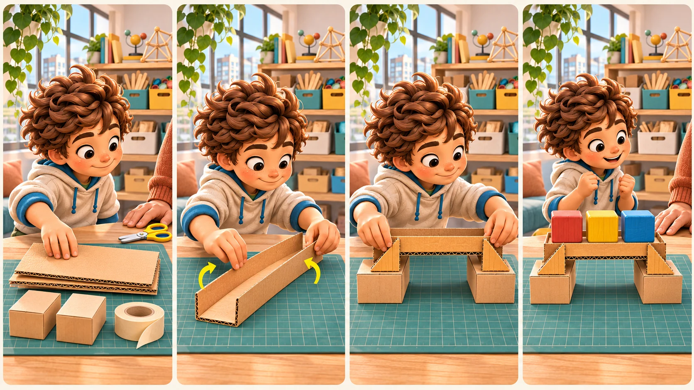

Preparar
Revisa materiales, mesa y acompañamiento.
 RAÍCES · Taller← Volver a Aprendiendo
RAÍCES · Taller← Volver a AprendiendoImaginar · construir · probar · mejorar
Cada reto técnico termina en una manualidad o prototipo físico. Elige una guía, prepara alternativas con lo que ya tengas y construye acompañado, sin buscar que salga perfecto a la primera.

Revisa materiales, mesa y acompañamiento.
Sigue pasos cortos y comprueba cada unión.
Cambia una sola condición y observa.
Registra un ajuste y vuelve a intentar.
9 proyectos originales · Familia Plus
Todas las guías incluyen alternativas de materiales, prueba física y cierre con evidencia.

Prueba real
Una mejora
Tu resultado físico
Haz una foto o un dibujo de la versión terminada. Cuenta qué cambiaste y qué ocurrió; esto es evidencia del proceso, no una nota.
Boceto libre
Una persona adulta hace perforaciones y cortes difíciles. No se usan corriente de pared, calor, vidrio, piezas con punta ni baterías o cables dañados.